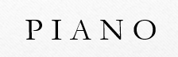

<nz-layout [style.width]="pageWidth + 'px'" [style.height]="pageHeight + 'px'">
  <nz-header>
    <div class="logo">
      <a routerLink="/routes/home/dashboard" title="首页">
        
      </a>
    </div>
    <ul nz-menu nzTheme="dark" nzMode="horizontal">
      <li nz-submenu nzTitle="系统管理" nzIcon="tool">
        <ul>
          <li nz-menu-group nzTitle="用户管理">
            <ul>
              <li nz-menu-item><a [routerLink]="['/routes/system/onboarding']">员工入职</a></li>
              <li nz-menu-item><a [routerLink]="['/routes/system/quit']">员工离职</a></li>
              <li nz-menu-item>账号管理</li>
              <li nz-menu-item>绩效考评</li>
            </ul>
          </li>
          <li nz-menu-group nzTitle="任务中心">
            <ul>
              <li nz-menu-item><a routerLink="/routes/task/application">任务列表</a></li>
              <li nz-menu-item>发布新任务</li>
            </ul>
          </li>
        </ul>
      </li>
      <li nz-submenu nzTitle="消息中心" nzIcon="notification">
        <ul>
          <li nz-menu-item>用户消息</li>
          <li nz-menu-item>邮件中心</li>
          <li nz-menu-item>短信中心</li>
          <li nz-menu-item>系统消息</li>
        </ul>
      </li>
      <li nz-submenu nzTitle="案例中心" nzIcon="profile">
        <ul>
          <li nz-menu-item><a routerLink="/routes/demo/demo1">日历视图</a></li>
        </ul>
      </li>
      <li nz-submenu nzTitle="设置" nzIcon="setting">
        <ul>
          <li nz-menu-item><a [routerLink]="['/routes/home/personal-center']">个人中心</a></li>
          <li nz-menu-item>常规设置</li>
          <li nz-menu-item>关于</li>
        </ul>
      </li>
    </ul>

  </nz-header>
  <nz-content>
    <div class="inner-content">
      <router-outlet></router-outlet>
    </div>
  </nz-content>
  <nz-footer>
    PIANO Design ©{{year}} Implement By Angular
  </nz-footer>
</nz-layout>
